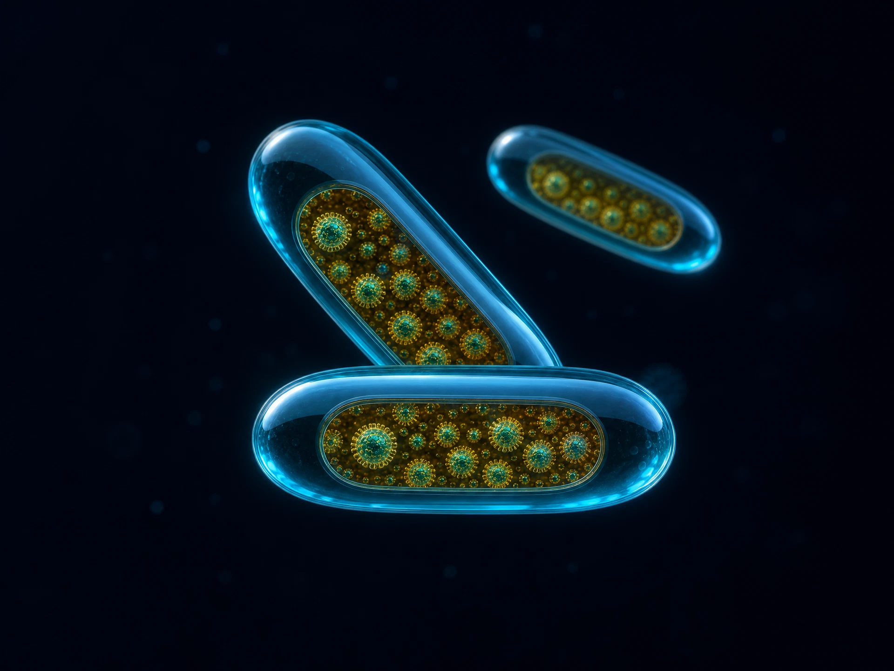

Programme
One CHR-P programme
NWPT-SM32300 and a planned Phase 2B study. Clinical decisions stay with NWPharmaTech as pharmaceutical sponsor.
Last reviewed: 23 September 2026
Programme overview
NWPharmaTech’s CHR-P programme is developing NWPT-SM32300, an investigational oral cannabidiol formulation, for people experiencing symptoms associated with a clinical high risk of psychosis.
The programme is led by Professor Scott Woods of Yale University, an internationally recognised expert in early psychosis and clinical high-risk assessment.
The planned Phase 2B study is designed to evaluate dose response, symptoms, safety and tolerability, and inform the next stage of development. The proposed design includes approximately 328 participants receiving placebo or one of three daily doses over 12 weeks, with follow-up at week 16.
Our ambition is to advance earlier intervention through rigorous clinical evidence. The treatment’s effectiveness in this population has not yet been established, and study initiation remains subject to funding, finalisation and applicable approvals.
For field context on why CHR-P research matters — prevalence, transition risk, NICE care standards, and the pharmaceutical research gap — see Why early intervention matters.
Professor Woods’s role is individual scientific/programme leadership. Yale University does not sponsor or endorse this website, the DAO, or any financing vehicle.
See the Team page for corporate leadership, programme scientific expertise (including Professor Scott Woods as CHR-P programme lead in an individual capacity), and company advisers.
Effectiveness in this population has not been established. This page does not claim prevention or delay of psychosis. You cannot invest, pay, or connect a wallet on this website.
The candidate

NWPT-SM32300 is NWPharmaTech’s investigational oral cannabidiol formulation (300 mg CBD micellar-emulsion softgel presentation). The CHR-P programme would evaluate its effects on symptoms, safety and tolerability in people at clinical high risk. Effectiveness in this population has not been established.
Findings from other CBD products — including schizophrenia adjunct literature — are hypothesis-generating only. They are not evidence generated with this formulation. See the evidence library for field context versus programme-specific status.

Proposed study design
Primary outcome details are being finalised. Expand below for the proposed Phase 2B design at a high level — including proposed symptom assessments — without locking which instrument is primary.

Expand: proposed Phase 2B study design
- Population: people experiencing symptoms associated with clinical high risk of psychosis (eligibility subject to final protocol and approvals).
- Arms: placebo or 300 mg, 600 mg, or 900 mg once daily (four arms).
- Size: approximately 328 participants.
- Duration: 12 weeks of treatment, with follow-up at week 16.
- Aims: dose response, symptoms, safety and tolerability — informing the next stage of development.
- Proposed assessments: instruments under consideration include PANSS and PSYCHS, among other clinical and safety measures. Which is primary has not been finalised for public statement.
Prevention or delay of transition to frank psychosis is a longer-term question and must be separately powered if claimed as a primary aim. It is not established here.
See the public synopsis for the same overview in resource form.
What must happen next?
- Finalise the clinical synopsis for the planned Phase 2B (including primary outcome details) with the clinical and statistical team.
- Complete operational finalisation of the proposed four-arm design (N≈328) — sites, ethics, and regulatory submissions as applicable.
- Numerical exposure and safety figures will not be published here until formal study reports are available.
- Study initiation remains subject to funding, finalisation and applicable approvals.

How the programme could be supported
NWPharmaTech is exploring a private, eligibility-gated way to fund a defined CHR-P clinical step — so the science can move without turning this website into an investment product.
We are evaluating a platform-supported route for eligible investors to help finance the CHR-P research programme, including a permissioned digital record of participation at closing where that proves feasible. If a platform path cannot meet legal, operational or investor-access requirements, a conventional private placement with a legal investor register remains the fallback. These are development objectives, not live offering terms. Neither path is available on this website: production investment, payment and token issuance remain inactive. Community updates and discussion are separate from any regulated investment process.
Support would sit in a dedicated programme vehicle. Clinical decisions would remain with NWPharmaTech as pharmaceutical sponsor (and with investigators, ethics committees, and regulators as applicable). Supporters would not vote on dose, endpoints, or medical care, and would not own the medicine or patient data.
On this website today: you can learn about the science, read updates, and contact us about research or collaboration. You cannot invest, pay, or connect a wallet here.
Financing interfaces stay inactive on this public site — not a live raise or an offer here.
Collaboration context
Independent research areas shown as a conceptual network — not participating sites or institutional endorsement.

Further reading
Public synopsis · Funding use · Programme brief (HTML + PDF) · Science · Evidence · Roadmap · DeSci approach · Contact